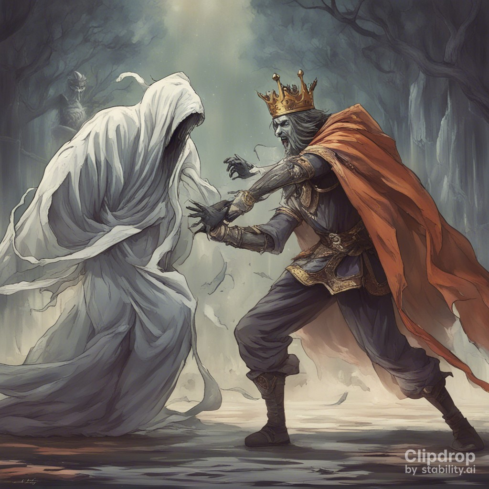

|  |
"Don’t worry, father," Indumati, assured Chandradeep . " All those who profess that they love me than their life will certainly take these tests. You just watch!" The king consulted his ministers.They came out with a suggestion. "If the princess is determined to impose the tests, let her wish be carried out," said the prime Minister. "But when we make the announcement, let us not spell out the details. They will be let known only at time of the test." Chandradeep agreed to the suggestion. The royal announcement about the princess wedding merely stated that the suitors would have to take certain tests.. The announcement was made in all the neighbouring kingdoms, including Jayanagar, where a young man named Kurupshana heard it. He had been born with both hands stunted. His mother died soon after he was born, and his father took a second wife. The boy was named Kurupshana, the ugly looking. |